The Two Standard Inserts
Almost every F2L case is solved by first converting it into one of these two basic patterns, then doing the standard 3-move insert. Learn these two by heart — everything else builds on them.

R U R'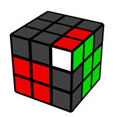
U R U' R'Easy Conversions
These cases are just a short conversion followed by one of the two standard inserts above — you can see it in the suffix of each algorithm. Do the conversion, and you're back to the basic pattern.
U' R U' R' U F' U' FU' R U R' U R U R'U' R U2 R' U F' U' FU' R U' R' U R U R'R U' R' U2 F' U' FR U2 R' U' R U R'U R U2 R' U R U' R'U2 R U R' U R U' R'U R U' R' U' R U' R' U R U' R'U' R' F R F' R U R'R U' R' U R U' R'R' F R F' U R U' R'R U R' U' R U R'U R U' R' U R U' R' U R U' R'U R U R' U2 R U R'U' R U R' U F' U' FU F' U' F U' R U R'R U' R' U R U2 R' U R U' R'r U' r' U2 r U r' R U R'All 41 Cases
The complete F2L algorithm set, grouped by where the corner and edge are.
Free Pairs

U R U' R'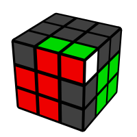
F R' F' R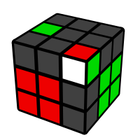
F' U' F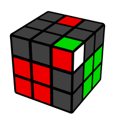
R U R'Disconnected Pairs
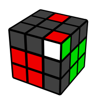
U' R U R' U2 R U' R'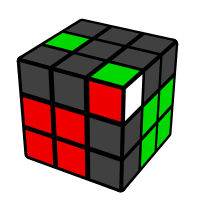
U' r U' R' U R U r'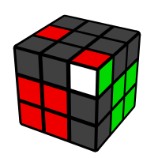
U' R U2 R' U' R U2 R'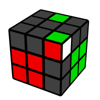
r' U2 R2 U R2 U r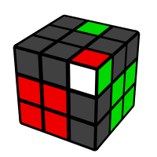
U' R U' R' U F' U' F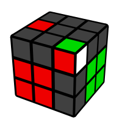
U' R U R' U R U R'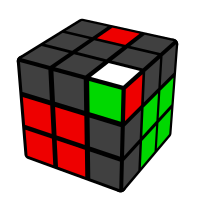
U R U2 R' U R U' R'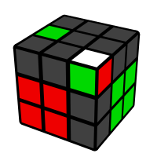
U' R' U2 R U' R' U R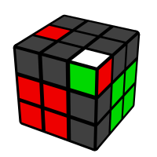
U2 R U R' U R U' R'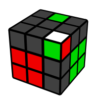
r U' r' U2 r U r'Connected Pairs
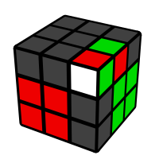
U' R U2 R' U F' U' F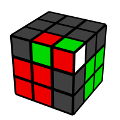
R U' R' U R U' R' U2 R U' R'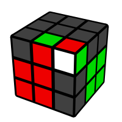
U R' U R U' R' U' R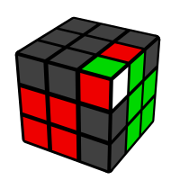
U' R U' R' U R U R'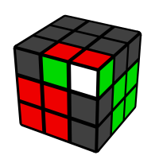
M U r U' r' U' M'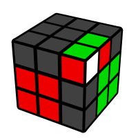
R U' R' U2 F' U' F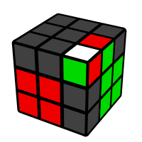
R U2 R' U' R U R'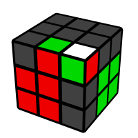
R' U2 R U R' U' R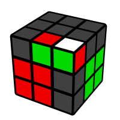
U R U' R' U' R U' R' U R U' R'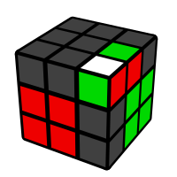
F U R U' R' F' R U' R'Corner In Slot
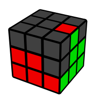
U' R' F R F' R U R'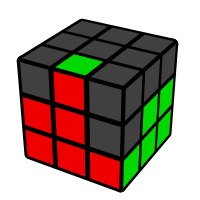
U R U' R' F R' F' R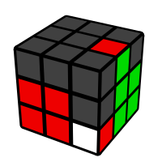
R U' R' U R U' R'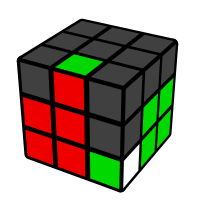
R U R' U' F R' F' R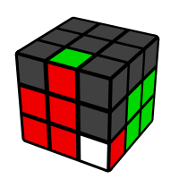
R' F R F' U R U' R'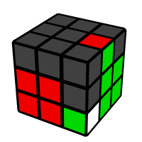
R U R' U' R U R'Edge In Slot
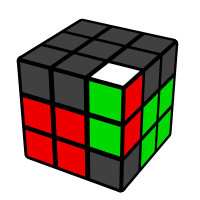
U' R' F R F' R U' R'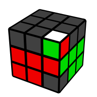
U R U' R' U R U' R' U R U' R'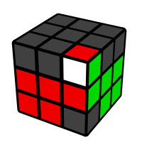
U' R U' R' U2 R U' R'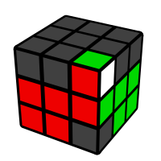
U R U R' U2 R U R'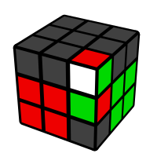
U' R U R' U F' U' F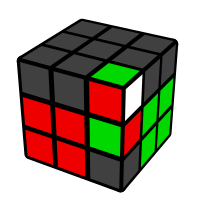
U F' U' F U' R U R'Pieces In Slot
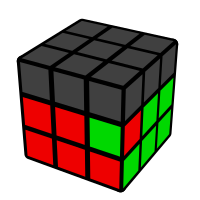
R2 U2 F R2 F' U2 R' U R'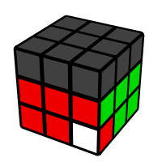
R U' R' U' R U R' U2 R U' R'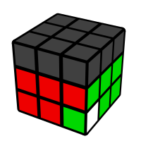
R U' R' U R U2 R' U R U' R'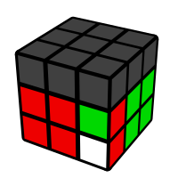
r U' r' U2 r U r' R U R'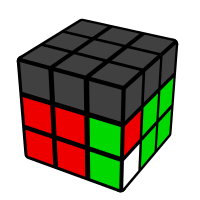
R U' R' r U' r' U2 r U r'